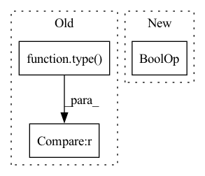

Pattern ID :3502
Before Change
raise ValueError("currently only "same" padding is supported")
kernel_size_factor = float(kernel_size_factor)
if type(kernel_size) in (list, tuple) :
kernel_size = [
compute_new_kernel_size(k, kernel_size_factor) for k in kernel_size
]After Change
res_list = nn.ModuleList()
stride_residual = (
stride if stride [0] == 1 or stride_last else stride[0] ** repeat
)
if len(residual_panes) == 0:
res_panes = [inplanes]In pattern: SUPERPATTERN
Frequency: 4
Non-data size: 3
Instances Fragment ID: 13394189
Project Name: scart97/thunder-speech
Commit Name: 7d74ab01c5cba3921b0c91bdd1354b85daa8c2f8
Time: 2021-02-02
Author: scart.lucas@gmail.com
File Name: src/thunder/jasper/blocks.py
M Class Name: JasperBlock
N Class Name: JasperBlock
M Method Name: __init__(23)
N Method Name: __init__(25)
M Parent Class: nn.Module
N Parent Class: nn.Module
M File Name: src/thunder/jasper/blocks.py
N File Name: src/thunder/jasper/blocks.py
M Start Line: 342
M End Line: 466
N Start Line: 419
N End Line: 538
Before Change
graph_nx = getattr(nx, substructure_type)(k)
else:
graphs_nx = nx.read_graph6(os.path.join(filename, "graph{}c.g6".format(k)))
if type(graphs_nx) is list :
edge_lists += [list(graph_nx.edges) for graph_nx in graphs_nx]
else:
edge_lists.append(list(graphs_nx.edges))After Change
graphs_nx = getattr(nx, substructure_type)(k)
else:
graphs_nx = nx.read_graph6(os.path.join(filename, "graph{}c.g6".format(k)))
if isinstance(graphs_nx, list) or isinstance(graphs_nx, types.GeneratorType) :
edge_lists += [list(graph_nx.edges) for graph_nx in graphs_nx]
else:
edge_lists.append(list(graphs_nx.edges)) Fragment ID: 13394190
Project Name: gbouritsas/graph-substructure-networks
Commit Name: 5d89b1be403cd0e50bc0f1659a513d44eddcc4ee
Time: 2020-11-04
Author: gb318@rosella.doc.ic.ac.uk
File Name: utils.py
M Class Name: AnonimousClass
N Class Name: AnonimousClass
M Method Name: get_custom_edge_list(3)
N Method Name: get_custom_edge_list(3)
M Parent Class:
N Parent Class:
M File Name: utils.py
N File Name: utils.py
M Start Line: 25
M End Line: 28
N Start Line: 26
N End Line: 29
Before Change
def _is_invalid_number(value):
return type(value) == float and value in {
float("inf"),
-float("inf"),
float("nan"),After Change
if not isinstance(value, float):
return False
return math.isnan(value) or math.isinf(value)
def convert(d):
if isinstance(d, (dict, OrderedDict)): Fragment ID: 13394185
Project Name: voxel51/fiftyone
Commit Name: 5873dbad0af5510c3db279609b1f0b2e51a4833e
Time: 2021-10-19
Author: ben@voxel51.com
File Name: fiftyone/server/json_util.py
M Class Name: AnonimousClass
N Class Name: AnonimousClass
M Method Name: _is_invalid_number(1)
N Method Name: _is_invalid_number(1)
M Parent Class:
N Parent Class:
M File Name: fiftyone/server/json_util.py
N File Name: fiftyone/server/json_util.py
M Start Line: 48
M End Line: 52
N Start Line: 49
N End Line: 52
Before Change
@staticmethod
def point2point(point, in_source, to_source):
if type(in_source) is Point.PointSource :
in_source = in_source.value
if type(to_source) is Point.PointSource:
to_source = to_source.valueAfter Change
@staticmethod
def point2point(point, in_source, to_source):
if point is None or len(point) == 0 :
pass
elif type(point[0]) in [tuple, list, np.ndarray]:
point = [Point.point2point(p, in_source=in_source, to_source=to_source) for p in point] Fragment ID: 13394180
Project Name: pooya-mohammadi/deep_utils
Commit Name: 2ef8e70d9e4b3bc53df5294415180ce10a4ed033
Time: 2021-07-21
Author: practical.ai.programming@gmail.com
File Name: deep_utils/utils/box_utils/boxes.py
M Class Name: Point
N Class Name: Point
M Method Name: point2point(3)
N Method Name: point2point(3)
M Parent Class:
N Parent Class:
M File Name: deep_utils/utils/box_utils/boxes.py
N File Name: deep_utils/utils/box_utils/boxes.py
M Start Line: 12
M End Line: 26
N Start Line: 12
N End Line: 17